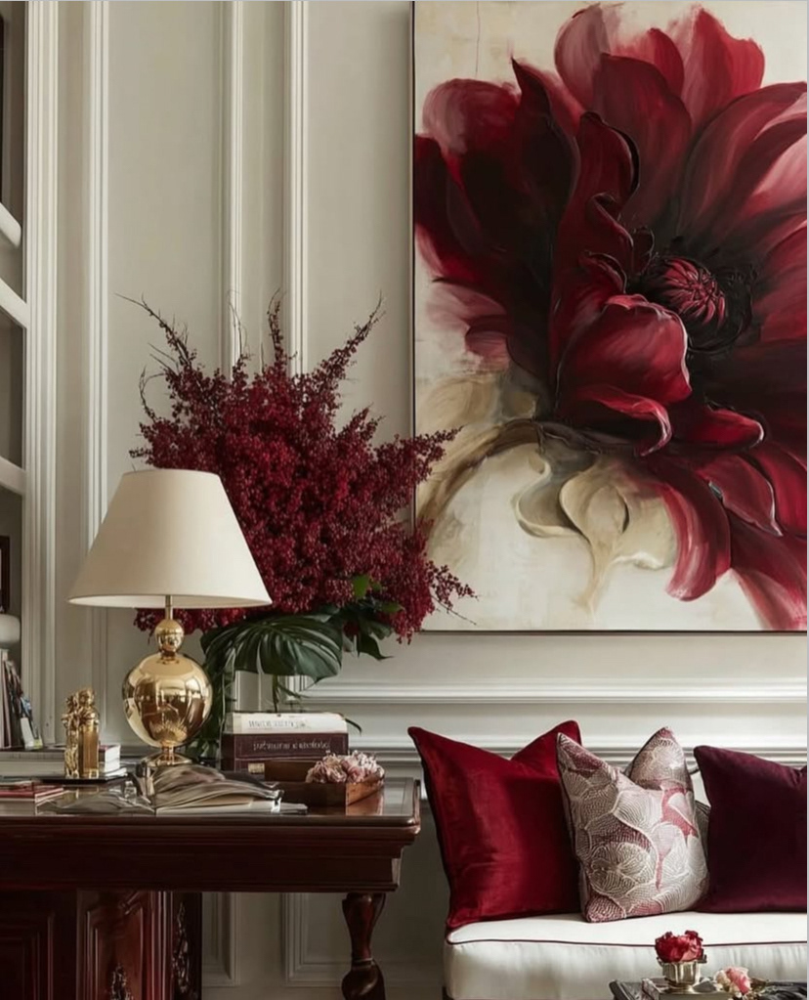
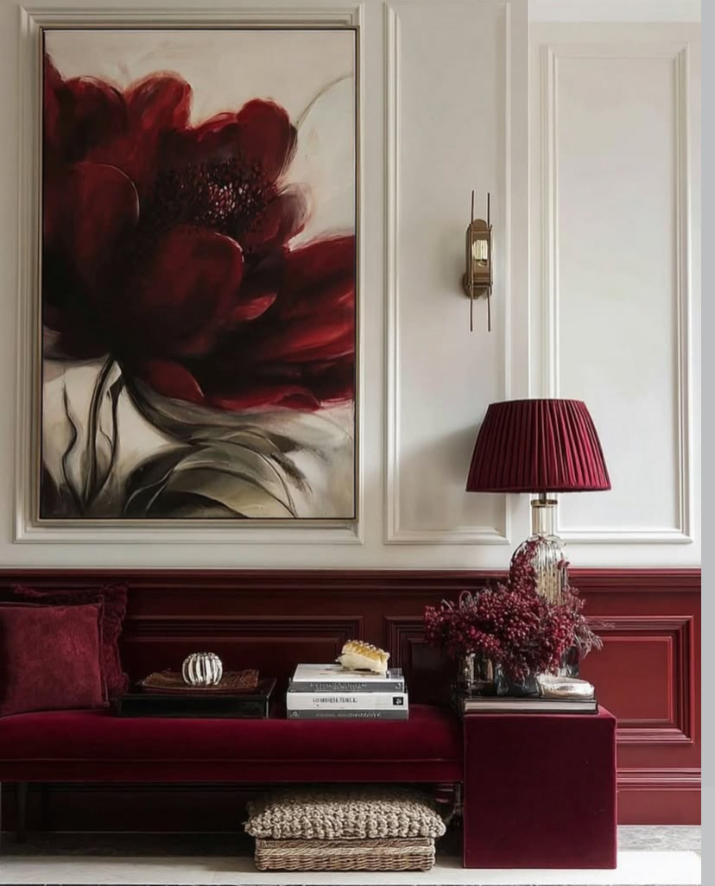
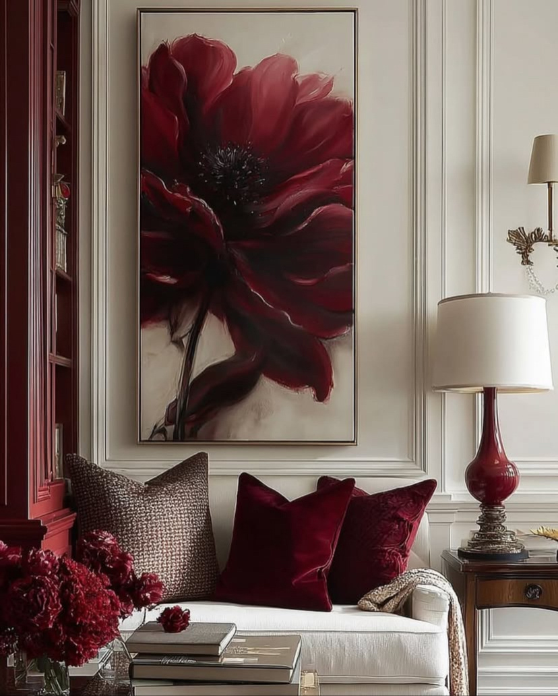
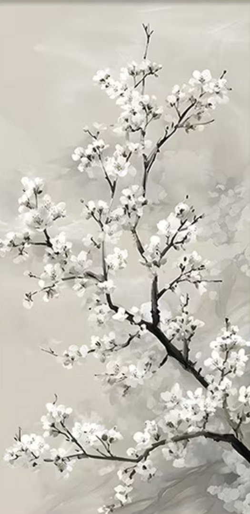
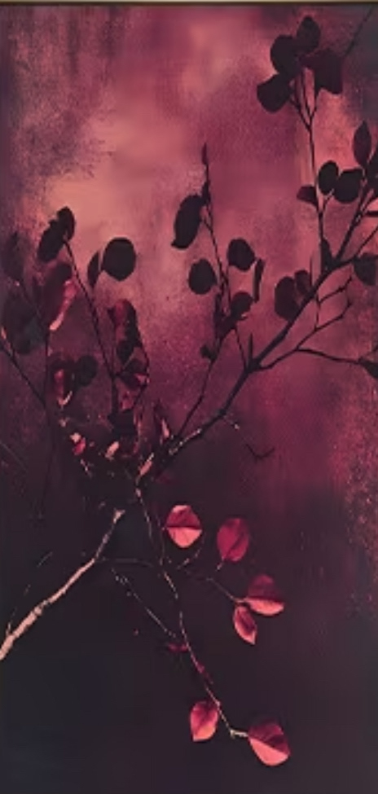

Floral Artwork - Timeless elegant study
2026Deep red meets classic architecture. A single, expressive floral painting sets the tone — bordeaux velvet, garnet glass, lacquered wood, and crisp white moldings pull the rest of the room into orbit.




